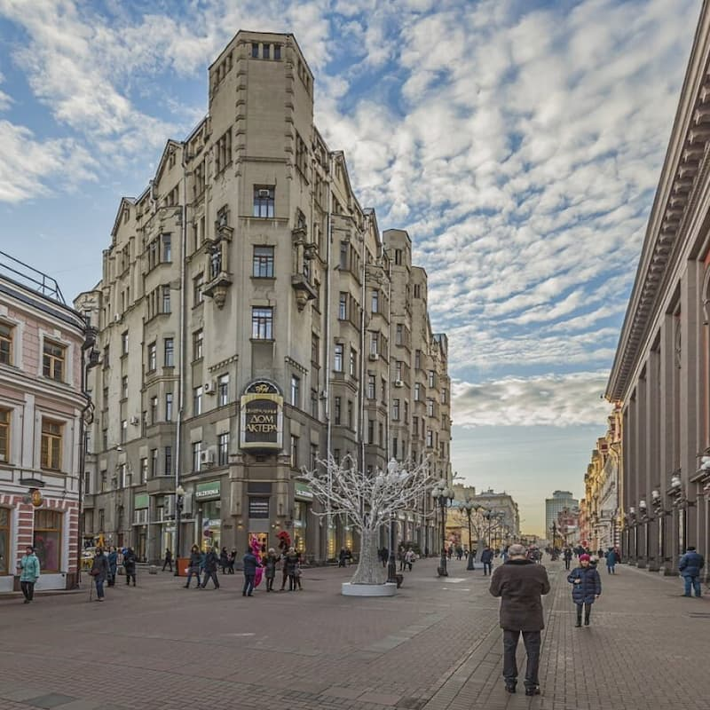
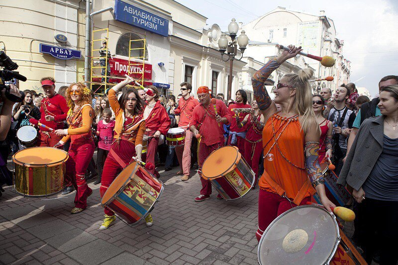

Арбат: Душа старой Москвы
Арбат — одна из старейших улиц Москвы, превратившаяся в пешеходную зону, полную творческой атмосферы. Это место, где можно почувствовать дух старой Москвы.
Я провёл день, слушая уличных музыкантов, покупая сувениры и наслаждаясь кофе в уютных кафе. Арбат известен своими художниками, поэтами и артистами, которые создают уникальную атмосферу.
На улице находятся исторические здания, музеи и мемориальные квартиры, такие как дом Пушкина. Это место идеально для неспешных прогулок.
Совет: Загляните в небольшие галереи или книжные магазины на Арбате, чтобы найти уникальные сувениры!